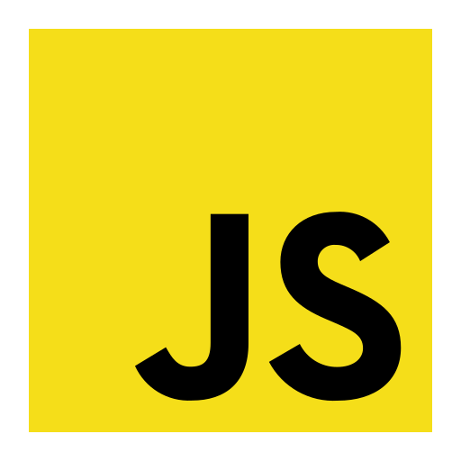
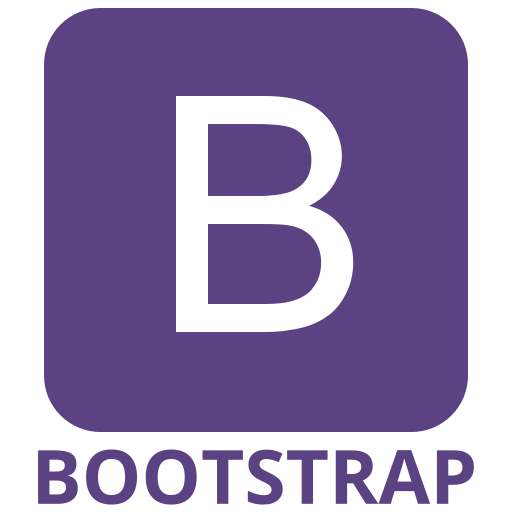

Sobre Mim
Sou uma profissional em início de carreira com experiência prática adquirida em estágios nas áreas de TI e análise de dados, com forte interesse em Desenvolvimento de Software, Análise de Dados e Automatização de Processos. Tenho experiência em trabalhar com Python e SQL, além de ferramentas como Power BI e Tableau para análise e visualização de dados.
Tecnologias




Soft Skills
- 🚀Proatividade: Sempre pronta para assumir a iniciativa...
- 🚀Boa comunicação: Habilidade para se comunicar...
- 🚀Conhecimento técnico: Amplo conhecimento...
- 🚀Conhecimento de negócios: Compreensão sólida...
- 🚀Dinamismo: Capacidade de se adaptar rapidamente...